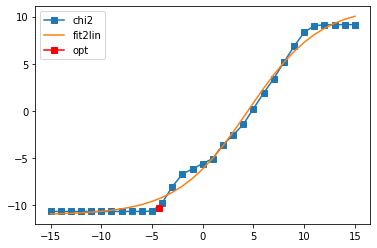

10. Maxent for matrix-valued Green’s functions¶
In this notebook we benchmark the “poorman” method for MaxEnt continuation of matrix-valued Green’s functions. To this end we consider a Green’s function that is a 2x2 matrix. First we define a diagonal matrix for the spectral function, then we rotate it to get also off-diagonal elements, and transform it to the imaginary axis. Then we do an analytical continuation for this matrix-valued Green’s function. In the very end we compare the determinants of the spectral matrices.
[1]:
import sys
import numpy as np
import matplotlib.pyplot as plt
#%matplotlib inline
sys.path.insert(0, '/home/josef/Programs/ana_cont')
from ana_cont import continuation as cont
[2]:
true_w = np.linspace(-5.,5.,num=5001, endpoint=True)
beta = 40.
niw = 20
wn = np.pi/beta * (2.*np.arange(niw) + 1.)
def gauss_peak(center, width):
return np.exp(-(true_w-center)**2/(2.*width**2)) / (width*np.sqrt(2.*np.pi))
true_spec_1 = 0.5*(gauss_peak(1., 0.2) + gauss_peak(2.,0.7))
true_spec_2 = 0.5*(gauss_peak(-1., 0.25) + gauss_peak(-2.1, 0.6))
spec_matrix = np.zeros((2,2,true_w.shape[0]))
spec_matrix[0,0] = true_spec_1
spec_matrix[1,1] = true_spec_2
rot_ang = 0.1
rot_mat = np.array([[np.cos(rot_ang), np.sin(rot_ang)],[-np.sin(rot_ang), np.cos(rot_ang)]])
true_spec_rot = np.einsum('ij,jkw,kl', rot_mat, spec_matrix, rot_mat.transpose())
plt.plot(true_w, true_spec_1, color='black')
plt.plot(true_w, true_spec_2, color='black')
plt.plot(true_w, true_spec_rot[0,0], label='diag1', ls='--')
plt.plot(true_w, true_spec_rot[1,1], label='diag2', ls='--')
plt.plot(true_w, true_spec_rot[0,1], label='offd1', ls='--')
plt.plot(true_w, true_spec_rot[1,0], label='offd2', ls='--')
plt.legend()
plt.show()
kernel = 1./(1j*wn[:,None] - true_w[None,:])
giw = np.trapz(kernel[None,None,:,:]*true_spec_rot[:,:,None,:], true_w, axis=3)
plt.plot(wn, giw[1,1].real, ls='--')
plt.plot(wn, giw[1,1].imag)
plt.show()
[3]:
wgrid = np.linspace(-4, 4, num=400)
#model = np.ones_like(wgrid)
#model = np.exp(-(wgrid-0.9)**2) * (wgrid-0.9)**2
model_diag = np.exp(-0.5*wgrid**2)
model_diag /= np.trapz(model_diag, wgrid)
errfac = 0.00001
err = errfac * np.ones_like(wn)
#perfect_model = np.abs(np.interp(wgrid, true_w, true_spec))
[4]:
probl_00 = cont.AnalyticContinuationProblem(im_axis=wn, re_axis=wgrid,
im_data=giw[0,0], kernel_mode='freq_fermionic')
probl_11 = cont.AnalyticContinuationProblem(im_axis=wn, re_axis=wgrid,
im_data=giw[1,1], kernel_mode='freq_fermionic')
probl_01 = cont.AnalyticContinuationProblem(im_axis=wn, re_axis=wgrid,
im_data=giw[0,1], kernel_mode='freq_fermionic')
[5]:
sol_00,sol_all_00 = probl_00.solve(method='maxent_svd', alpha_determination='chi2kink',
optimizer='newton', stdev=err, model=model_diag,
alpha_start=1e18, alpha_end=1e-10, fit_position=2.,
offdiag=False, interactive=True)
sol_11,sol_all_11 = probl_11.solve(method='maxent_svd', alpha_determination='chi2kink',
optimizer='newton', stdev=err, model=model_diag,
alpha_start=1e18, alpha_end=1e-10, fit_position=2.,
offdiag=False, interactive=True)
400 data points on real axis
40 data points on imaginary axis
31 significant singular values
Precomputation of coefficient matrices...
log10(alpha) = 18.00, chi2 = 6.684e+10, S = -3.486e-15, nfev = 1, norm = 1.000
log10(alpha) = 17.00, chi2 = 6.684e+10, S = -3.484e-13, nfev = 1, norm = 1.000
log10(alpha) = 16.00, chi2 = 6.684e+10, S = -3.484e-11, nfev = 1, norm = 1.000
log10(alpha) = 15.00, chi2 = 6.683e+10, S = -3.483e-09, nfev = 3, norm = 1.000
log10(alpha) = 14.00, chi2 = 6.670e+10, S = -3.471e-07, nfev = 10, norm = 1.000
log10(alpha) = 13.00, chi2 = 6.548e+10, S = -3.364e-05, nfev = 13, norm = 0.995
log10(alpha) = 12.00, chi2 = 5.578e+10, S = -2.554e-03, nfev = 16, norm = 0.962
log10(alpha) = 11.00, chi2 = 2.542e+10, S = -6.564e-02, nfev = 24, norm = 0.846
log10(alpha) = 10.00, chi2 = 4.428e+09, S = -3.971e-01, nfev = 26, norm = 0.820
log10(alpha) = 9.00, chi2 = 2.413e+08, S = -9.238e-01, nfev = 41, norm = 0.923
log10(alpha) = 8.00, chi2 = 5.062e+06, S = -1.164e+00, nfev = 52, norm = 0.970
log10(alpha) = 7.00, chi2 = 3.906e+05, S = -1.212e+00, nfev = 32, norm = 0.980
log10(alpha) = 6.00, chi2 = 5.671e+04, S = -1.261e+00, nfev = 27, norm = 0.989
log10(alpha) = 5.00, chi2 = 3.039e+03, S = -1.326e+00, nfev = 35, norm = 0.996
log10(alpha) = 4.00, chi2 = 1.029e+02, S = -1.357e+00, nfev = 37, norm = 0.999
log10(alpha) = 3.00, chi2 = 5.118e+00, S = -1.369e+00, nfev = 25, norm = 1.000
log10(alpha) = 2.00, chi2 = 2.034e-01, S = -1.374e+00, nfev = 22, norm = 1.000
log10(alpha) = 1.00, chi2 = 1.316e-02, S = -1.376e+00, nfev = 20, norm = 1.000
log10(alpha) = 0.00, chi2 = 1.313e-03, S = -1.378e+00, nfev = 59, norm = 1.000
log10(alpha) = -1.00, chi2 = 1.248e-04, S = -1.379e+00, nfev = 19, norm = 1.000
log10(alpha) = -2.00, chi2 = 4.717e-06, S = -1.380e+00, nfev = 16, norm = 1.000
log10(alpha) = -3.00, chi2 = 1.491e-07, S = -1.381e+00, nfev = 29, norm = 1.000
log10(alpha) = -4.00, chi2 = 3.705e-09, S = -1.381e+00, nfev = 49, norm = 1.000
log10(alpha) = -5.00, chi2 = 2.046e-09, S = -1.381e+00, nfev = 14, norm = 1.000
log10(alpha) = -6.00, chi2 = 2.120e-09, S = -1.381e+00, nfev = 4, norm = 1.000
log10(alpha) = -7.00, chi2 = 1.969e-09, S = -1.381e+00, nfev = 1, norm = 1.000
log10(alpha) = -8.00, chi2 = 1.929e-09, S = -1.381e+00, nfev = 1, norm = 1.000
log10(alpha) = -9.00, chi2 = 1.929e-09, S = -1.381e+00, nfev = 1, norm = 1.000
log10(alpha) = -10.00, chi2 = 1.929e-09, S = -1.381e+00, nfev = 1, norm = 1.000
Fit parameters [-9.77015836 21.41371487 3.12901759 0.28476624]
Optimal log alpha -3.8942867665688183
log10(alpha) = -3.89, chi2 = 4.106e-09, S = -1.381e+00, nfev = 39, norm = 1.000
400 data points on real axis
40 data points on imaginary axis
31 significant singular values
Precomputation of coefficient matrices...
log10(alpha) = 18.00, chi2 = 6.693e+10, S = -3.517e-15, nfev = 1, norm = 1.000
log10(alpha) = 17.00, chi2 = 6.693e+10, S = -3.522e-13, nfev = 1, norm = 1.000
log10(alpha) = 16.00, chi2 = 6.693e+10, S = -3.522e-11, nfev = 1, norm = 1.000
log10(alpha) = 15.00, chi2 = 6.692e+10, S = -3.521e-09, nfev = 3, norm = 1.000
log10(alpha) = 14.00, chi2 = 6.679e+10, S = -3.510e-07, nfev = 10, norm = 1.000
log10(alpha) = 13.00, chi2 = 6.556e+10, S = -3.400e-05, nfev = 13, norm = 0.995
log10(alpha) = 12.00, chi2 = 5.577e+10, S = -2.577e-03, nfev = 16, norm = 0.961
log10(alpha) = 11.00, chi2 = 2.534e+10, S = -6.570e-02, nfev = 25, norm = 0.840
log10(alpha) = 10.00, chi2 = 4.478e+09, S = -3.949e-01, nfev = 25, norm = 0.807
log10(alpha) = 9.00, chi2 = 2.575e+08, S = -9.298e-01, nfev = 50, norm = 0.909
log10(alpha) = 8.00, chi2 = 6.270e+06, S = -1.188e+00, nfev = 26, norm = 0.963
log10(alpha) = 7.00, chi2 = 4.438e+05, S = -1.251e+00, nfev = 34, norm = 0.980
log10(alpha) = 6.00, chi2 = 4.015e+04, S = -1.304e+00, nfev = 39, norm = 0.991
log10(alpha) = 5.00, chi2 = 1.821e+03, S = -1.349e+00, nfev = 32, norm = 0.997
log10(alpha) = 4.00, chi2 = 6.876e+01, S = -1.368e+00, nfev = 36, norm = 1.000
log10(alpha) = 3.00, chi2 = 4.825e+00, S = -1.376e+00, nfev = 40, norm = 1.000
log10(alpha) = 2.00, chi2 = 2.401e-01, S = -1.381e+00, nfev = 18, norm = 1.000
log10(alpha) = 1.00, chi2 = 1.113e-02, S = -1.383e+00, nfev = 28, norm = 1.000
log10(alpha) = 0.00, chi2 = 5.290e-04, S = -1.385e+00, nfev = 41, norm = 1.000
log10(alpha) = -1.00, chi2 = 4.537e-05, S = -1.385e+00, nfev = 27, norm = 1.000
log10(alpha) = -2.00, chi2 = 2.646e-06, S = -1.386e+00, nfev = 27, norm = 1.000
log10(alpha) = -3.00, chi2 = 1.122e-07, S = -1.386e+00, nfev = 48, norm = 1.000
log10(alpha) = -4.00, chi2 = 3.433e-09, S = -1.386e+00, nfev = 33, norm = 1.000
log10(alpha) = -5.00, chi2 = 1.920e-09, S = -1.387e+00, nfev = 10, norm = 1.000
log10(alpha) = -6.00, chi2 = 2.211e-09, S = -1.387e+00, nfev = 24, norm = 1.000
log10(alpha) = -7.00, chi2 = 2.207e-09, S = -1.387e+00, nfev = 3, norm = 1.000
log10(alpha) = -8.00, chi2 = 2.198e-09, S = -1.387e+00, nfev = 1, norm = 1.000
log10(alpha) = -9.00, chi2 = 2.198e-09, S = -1.387e+00, nfev = 1, norm = 1.000
log10(alpha) = -10.00, chi2 = 2.198e-09, S = -1.387e+00, nfev = 1, norm = 1.000
Fit parameters [-9.62078515 21.21741168 3.26551673 0.29376997]
Optimal log alpha -3.542531165072654
log10(alpha) = -3.54, chi2 = 2.176e-08, S = -1.386e+00, nfev = 57, norm = 1.000
[6]:
model_offd = np.sqrt(sol_00.A_opt * sol_11.A_opt)
plt.plot(true_w, true_spec_rot[0,0], color='blue', ls='--', label='true 1')
plt.plot(true_w, true_spec_rot[1,1], color='red', ls='--', label='true 2')
plt.plot(wgrid, sol_00.A_opt, color='blue', label='maxent 1')
plt.plot(wgrid, sol_11.A_opt, color='red', label='maxent 2')
plt.plot(wgrid, model_offd, color='green', label='default model for offdiag')
plt.legend()
plt.show()
plt.plot(true_w, true_spec_rot[0,0], color='blue', ls='--')
plt.plot(true_w, true_spec_rot[1,1], color='red', ls='--')
plt.plot(wgrid, sol_00.A_opt, color='blue')
plt.plot(wgrid, sol_11.A_opt, color='red')
plt.plot(wgrid, model_offd, color='green')
plt.xlim(-1,1)
plt.show()
[7]:
sol_01, sol_all_01 = probl_01.solve(method='maxent_svd', alpha_determination='chi2kink', optimizer='newton',
stdev=err, model=model_offd, offdiag=True,
preblur=False, blur_width=0.05, # preblur not necessary
alpha_start=1e15, alpha_end=1e-15,
interactive=True)
400 data points on real axis
40 data points on imaginary axis
31 significant singular values
Precomputation of coefficient matrices...
log10(alpha) = 15.00, chi2 = 1.400e+09, S = -1.084e-11, nfev = 1, norm = -0.000
log10(alpha) = 14.00, chi2 = 1.400e+09, S = -1.083e-09, nfev = 7, norm = -0.000
log10(alpha) = 13.00, chi2 = 1.396e+09, S = -1.080e-07, nfev = 11, norm = -0.000
log10(alpha) = 12.00, chi2 = 1.358e+09, S = -1.051e-05, nfev = 14, norm = -0.000
log10(alpha) = 11.00, chi2 = 1.050e+09, S = -8.125e-04, nfev = 17, norm = -0.000
log10(alpha) = 10.00, chi2 = 2.152e+08, S = -1.669e-02, nfev = 27, norm = -0.001
log10(alpha) = 9.00, chi2 = 6.829e+06, S = -3.987e-02, nfev = 31, norm = -0.001
log10(alpha) = 8.00, chi2 = 1.440e+05, S = -4.670e-02, nfev = 28, norm = 0.000
log10(alpha) = 7.00, chi2 = 2.595e+03, S = -4.806e-02, nfev = 24, norm = 0.000
log10(alpha) = 6.00, chi2 = 7.595e+01, S = -4.832e-02, nfev = 18, norm = -0.000
log10(alpha) = 5.00, chi2 = 1.753e+00, S = -4.840e-02, nfev = 18, norm = 0.000
log10(alpha) = 4.00, chi2 = 3.800e-02, S = -4.841e-02, nfev = 14, norm = 0.000
log10(alpha) = 3.00, chi2 = 2.703e-03, S = -4.842e-02, nfev = 14, norm = -0.000
log10(alpha) = 2.00, chi2 = 2.762e-04, S = -4.842e-02, nfev = 13, norm = -0.000
log10(alpha) = 1.00, chi2 = 9.035e-06, S = -4.842e-02, nfev = 13, norm = -0.000
log10(alpha) = 0.00, chi2 = 2.630e-06, S = -4.843e-02, nfev = 12, norm = 0.000
log10(alpha) = -1.00, chi2 = 7.289e-07, S = -4.843e-02, nfev = 19, norm = 0.000
log10(alpha) = -2.00, chi2 = 2.025e-07, S = -4.844e-02, nfev = 15, norm = 0.000
log10(alpha) = -3.00, chi2 = 9.426e-09, S = -4.846e-02, nfev = 18, norm = 0.000
log10(alpha) = -4.00, chi2 = 1.758e-10, S = -4.847e-02, nfev = 16, norm = 0.000
log10(alpha) = -5.00, chi2 = 2.416e-11, S = -4.847e-02, nfev = 16, norm = 0.000
log10(alpha) = -6.00, chi2 = 2.226e-11, S = -4.847e-02, nfev = 5, norm = 0.000
log10(alpha) = -7.00, chi2 = 2.234e-11, S = -4.847e-02, nfev = 1, norm = 0.000
log10(alpha) = -8.00, chi2 = 2.218e-11, S = -4.847e-02, nfev = 1, norm = 0.000
log10(alpha) = -9.00, chi2 = 2.218e-11, S = -4.847e-02, nfev = 1, norm = 0.000
log10(alpha) = -10.00, chi2 = 2.218e-11, S = -4.847e-02, nfev = 1, norm = 0.000
log10(alpha) = -11.00, chi2 = 2.218e-11, S = -4.847e-02, nfev = 1, norm = 0.000
log10(alpha) = -12.00, chi2 = 2.218e-11, S = -4.847e-02, nfev = 1, norm = 0.000
log10(alpha) = -13.00, chi2 = 2.218e-11, S = -4.847e-02, nfev = 1, norm = 0.000
log10(alpha) = -14.00, chi2 = 2.218e-11, S = -4.847e-02, nfev = 1, norm = 0.000
log10(alpha) = -15.00, chi2 = 2.218e-11, S = -4.847e-02, nfev = 1, norm = 0.000
Fit parameters [-11.00254549 22.10493514 4.48412579 0.28317217]
Optimal log alpha -4.344425497997804
log10(alpha) = -4.34, chi2 = 5.710e-11, S = -4.847e-02, nfev = 10, norm = 0.000

[8]:
plt.plot(wgrid, sol_01.A_opt, color='green', label='maxent')
plt.plot(true_w, true_spec_rot[0,1], color='green', ls='--', label='true')
plt.legend()
plt.show()
plt.plot(wgrid, sol_01.A_opt, color='green', label='maxent')
plt.plot(true_w, true_spec_rot[0,1], color='green', ls='--', label='true')
plt.xlim(-1,1)
plt.legend()
plt.show()
[9]:
spec_rot = np.zeros((2,2,sol_00.A_opt.shape[0]))
spec_rot[0,0] = sol_00.A_opt
spec_rot[1,1] = sol_11.A_opt
spec_rot[0,1] = sol_01.A_opt
spec_rot[1,0] = sol_01.A_opt # 10 and 01 are identical
true_det = true_spec_1 * true_spec_2
true_det = np.linalg.det(true_spec_rot.transpose((2,0,1)))
det = np.linalg.det(spec_rot.transpose((2,0,1)))
plt.plot(true_w, true_det, label='true')
plt.plot(wgrid, det, label='cont')
plt.legend()
plt.show()
Conclusion: The poorman method actually works impressively well.
[ ]: